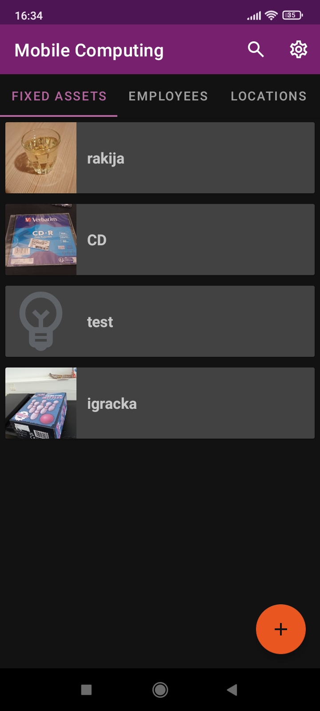
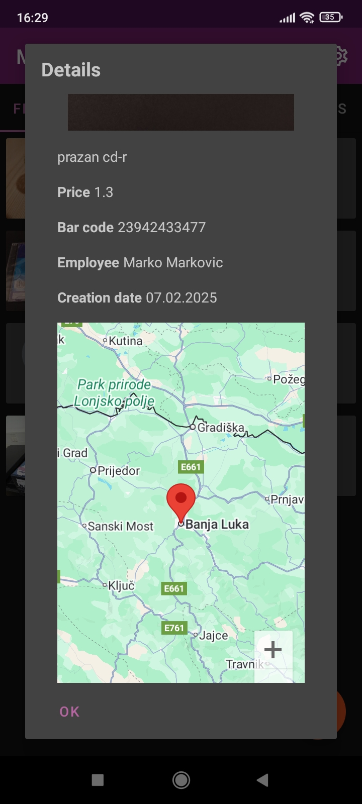
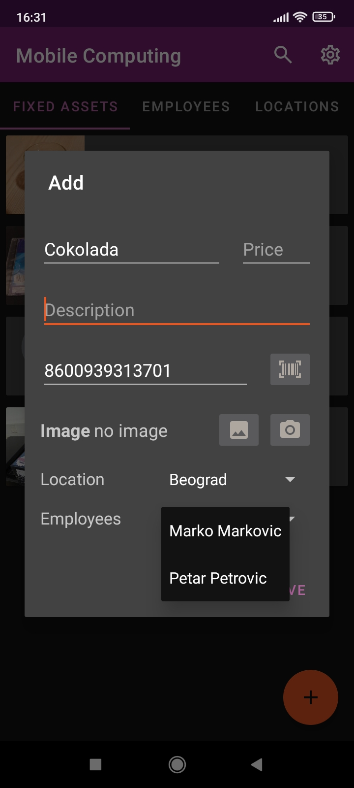
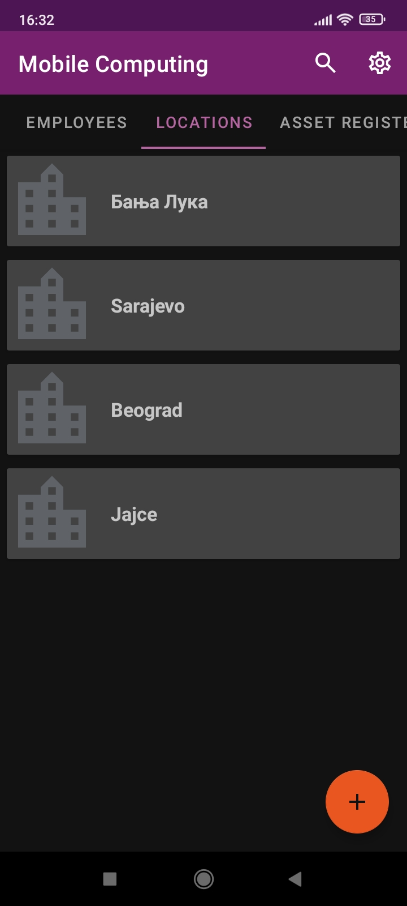
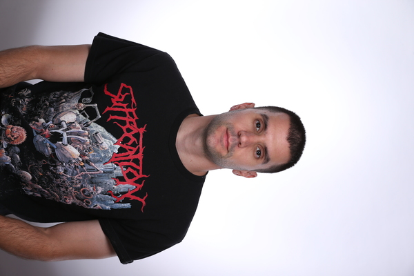

Web 3D studio
Međuplatformski 3D renderer koji se izvršava na bilo kojem aktuelnom veb pregledaču.
Korisnik je u mogućnosti da dodaje 3D modele u vidu ".obj" fajlova i da nad njima vrši razne
transformacije
poput translacije, rotacije i skaliranja. Takođe je moguće dodavati teksture na dodate objekte, brisati
ih, kao i
mijenjati smijer vektora svjetlosti.
Aplikacija je napisana u TypeScript programskom jeziku, u potpunosti se izvršava na klijentskoj
mašini, a grafičkom hardveru se pristupa preko WebGL 2 API-ja.
Github
Forum je veb aplikacija koja omogućava prijavljenim korisnicima da diskutuju o raznim
temama. Postoje tri tipa korisnika: obični, moderator i administrator. Moderator, pored mogućnosti
da ostavlja komentare (kao i obični korisnik), može da kontroliše ko od korisnika može da komentariše
na kojoj temi, mijenja i briše komentare. Administrator, pored privilegija koje ima moderator,
može da kontroliše tip svakog korisnika. Ova veb aplikacija ima klasičnu arhitekturu koja dijeli
odgovornosti
na front i bekend, gdje je front napisan uz pomoc Angular frejmvorka, a bekend čine Spring Boot sa MySQL
relacionom bazom.
Poseban akcenat je stavljen na sigurnost, koja je implementirana pomoću Spring Security-a.
Github
Assets Inventory
   
Mobilna aplikacija koja omogućava korisniku da unosi osnovna sredstva sa
podacima poput lokacije (koja se dodaje pomoću Google mape), naziva, opisa, cijene,
bar koda (koji je moguće unijeti ručno ili skeniranjem). Za ova sredstva su zaduženi zaposleni u
popisnim listama,
koje dodajemo putem aplikacije. Nad svim entitetima u aplikaciji su omogućene CRUD operacije, pri čemu
podatke
možemo pretraživati i čuvaju se u lokalnoj SQLite bazi podataka.
Github

Stefan Glamočić
Diplomirani inženjer elektrotehnike
Kroz studije na Elektrotehničkom fakultetu u Banjoj Luci sam radio
na mnoštvu različitih projekata, od raznih desktop, mobilnih, pa do veb aplikacija.
Projekti su podrazumijevali kako individualan, tako i grupni rad, kroz fakultetske obaveze i razne stručne prakse.
Stručne prakse su mi pružile priliku da radim u profesionalnom okruženju i da unaprijedim svoje vještine kroz rad sa mentorima.
Voljan sam da se konstantno usavršavam i učim nove tehnologije, a trenutno me najviše zanima oblast 3D grafike i razvoj interaktivnih vizuelnih sistema.